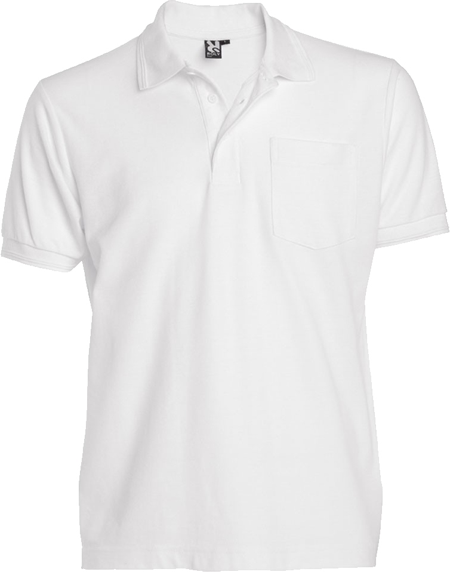
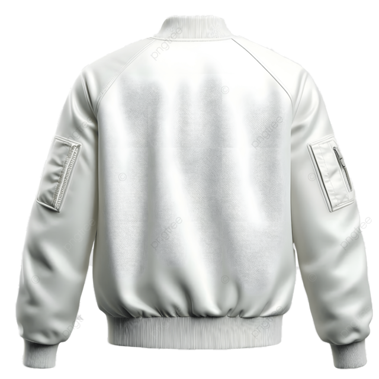

Kapa – Canvas
Znak je narisan s Canvasom z Bezierjevimi krivuljami (bezierCurveTo).

Slike izdelka ni bilo mogoče naložiti. Datoteka s sliko mora biti v isti mapi kot HTML.
Polo majica – SVG
Znak je vektorski SVG, sestavljen iz Bezierjevih krivulj v poteh (path).

Slike izdelka ni bilo mogoče naložiti. Datoteka s sliko mora biti v isti mapi kot HTML.
Jakna – PNG
Znak je izvožen kot PNG s prosojnim ozadjem in vstavljen kot slika.

Slike izdelka ni bilo mogoče naložiti. Datoteka s sliko mora biti v isti mapi kot HTML.